Seleccione la edición adecuada
Linux Mint está disponible en 3 sabores diferentes, incluyendo cada uno de ellos un entorno de escritorio diferente.
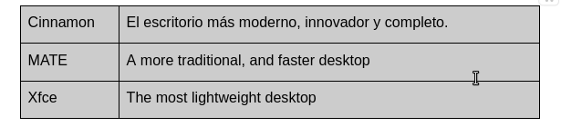Cinnamon
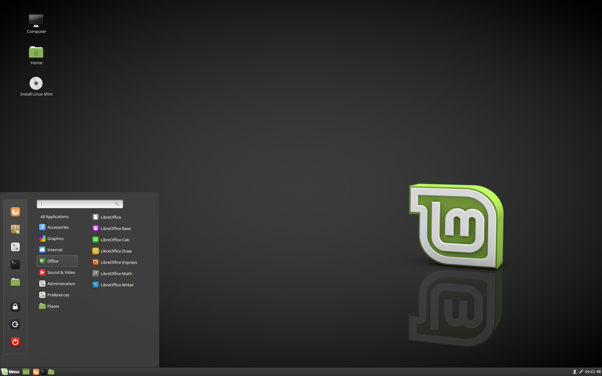Mate
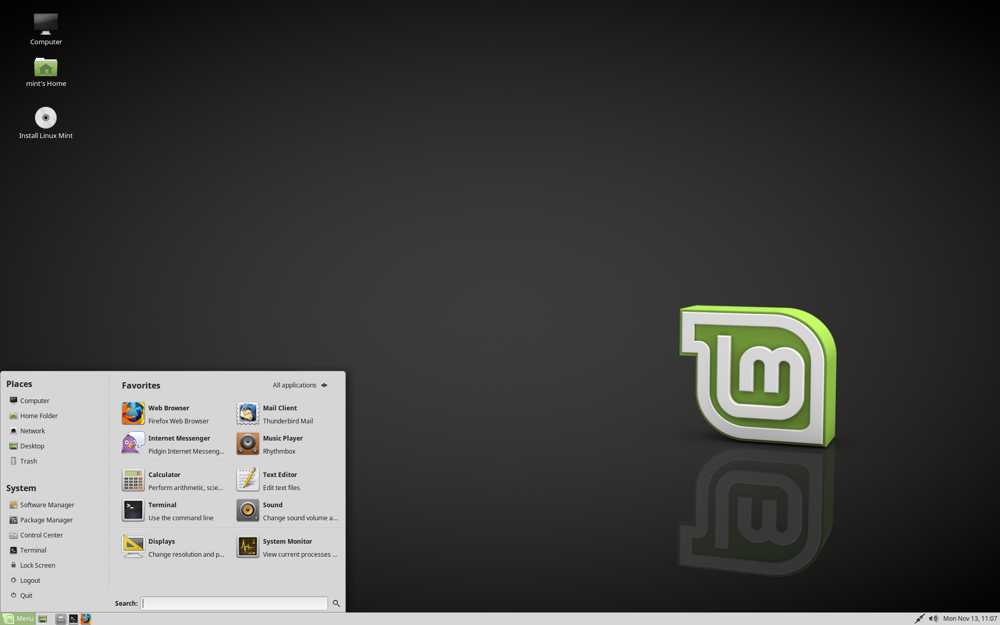XFCE
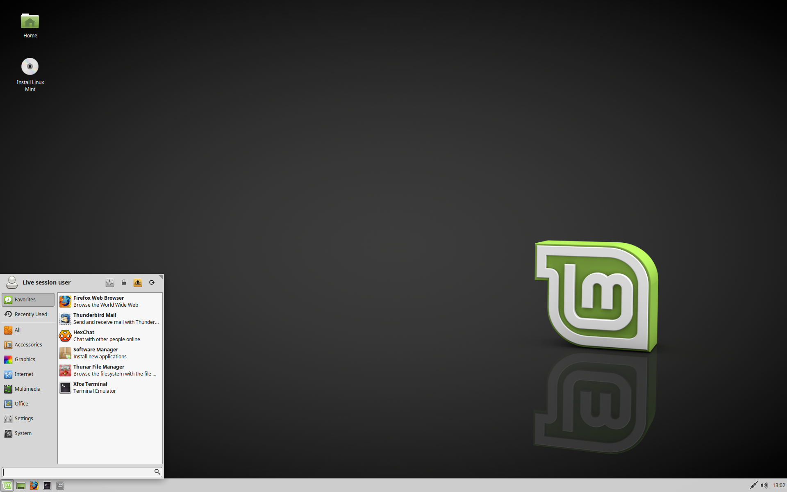Entonces como lo instalamos?
Pues necesitaremos descargar el iso de linux mint, como ya explicamos tendrás que seleccionar la iso con el entorno de escritorio de nuestra preferencia, aquí te dejaremos los links de descarga de linux mint: https://linuxmint.com/download.php
Una vez descarga la ISO pasaremos al booteo del sistema al pendrive:
En Windows, Mac o Linux
Primero asegúrate de descargar e instalar Etcher, una vez hecho eso, correlo.
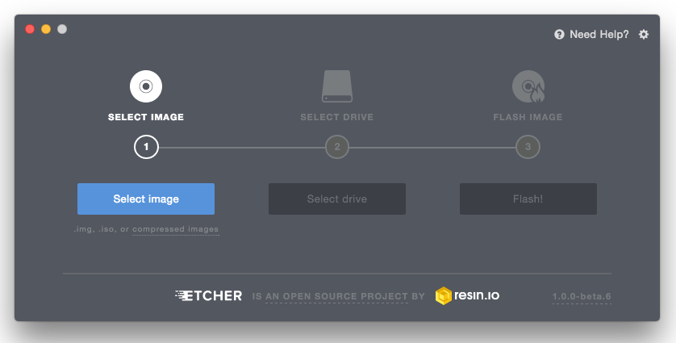Haga clic en Elegir imagen y seleccione el archivo ISO.
Haga clic en Elegir unidad y seleccione la memoria USB.
Haga clic en Flash!
Y listo ya tendrás tu pendrive booteado!!
Arrancar Linux Mint
1. Introduzca la unidad USB (o DVD) en el equipo.
Reinicie el equipo
Inicia el equipo desde el USB booteado, para deberas acceder al bios y establecer que tu sistema arranque comience por el usb booteado o sino tambien hay algunas PC's con el boton de seleccion de arranque en F9, F10 o F2.
Una vez pases ese paso, se arrancara el siguiente menu
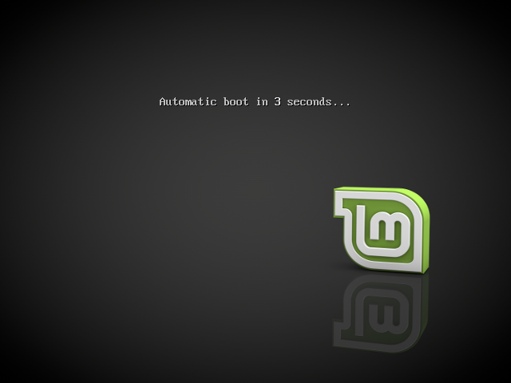
Tocara darle enter
Cuando se arranca el equipo desde una memoria USB (o DVD), Linux Mint inicia una sesión en vivo.
Instalando Linux Mint
Para instalar Linux Mint permanentemente en su ordenador:
Haga doble click en Instalar Linux Mint.
Seleccione su idioma.
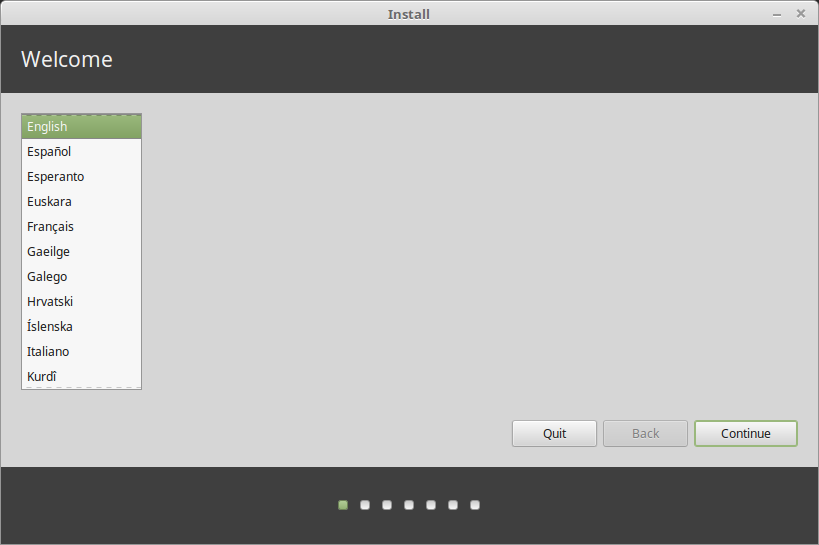Conéctese a internet.
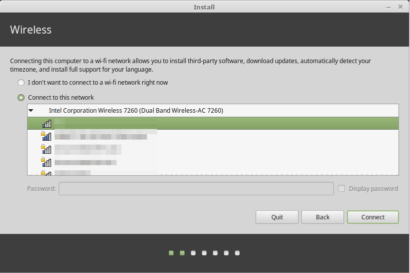Si está conectado a Internet, marque la casilla para instalar los códecs multimedia.
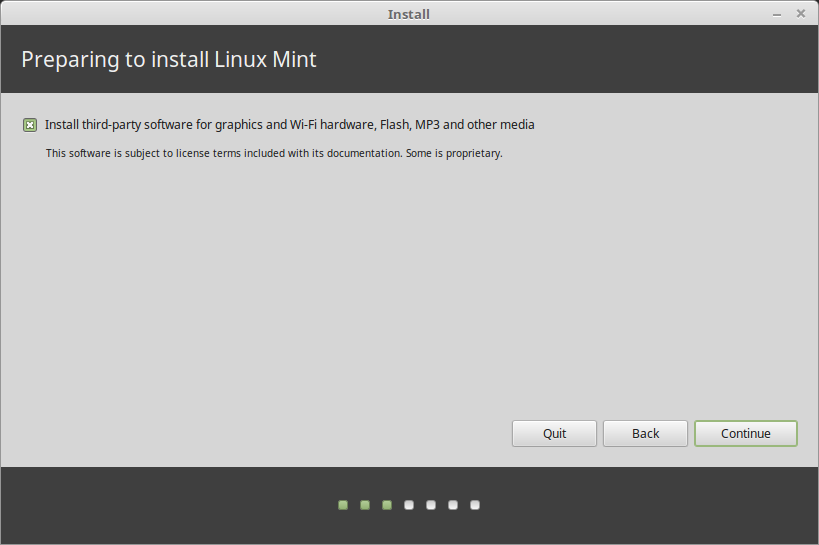Seleccione un tipo de instalación.
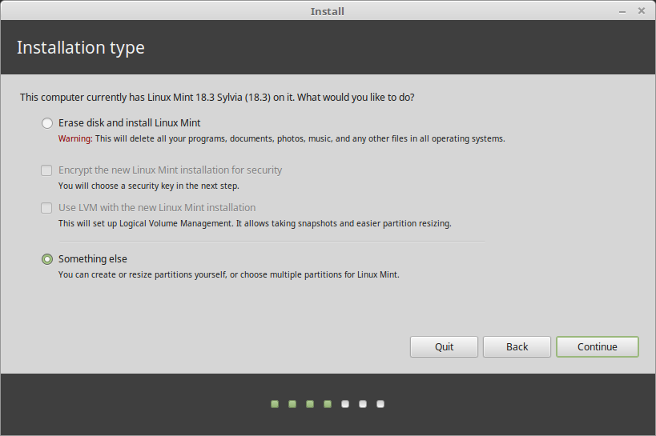Si Linux Mint es el único sistema operativo que ejecutará en el equipo y se puede borrar todo la información del disco duro, seleccione Borrar disco e instalar Linux Mint.
Si hay otro sistema operativo presente en el equipo, el instalador le mostrará la opción de instalar Linux Mint junto a él. Si escoge esta opción, el instalador redimensionará automáticamente el sistema operativo existente e instalará Linux Mint en el espacio hecho. Se instalará un menú de arranque para elegir entre ambos sistemas operativos cada vez que arranque el equipo.
Si desea gestionar las particiones o especificar qué particiones usar, seleccione Más opciones.
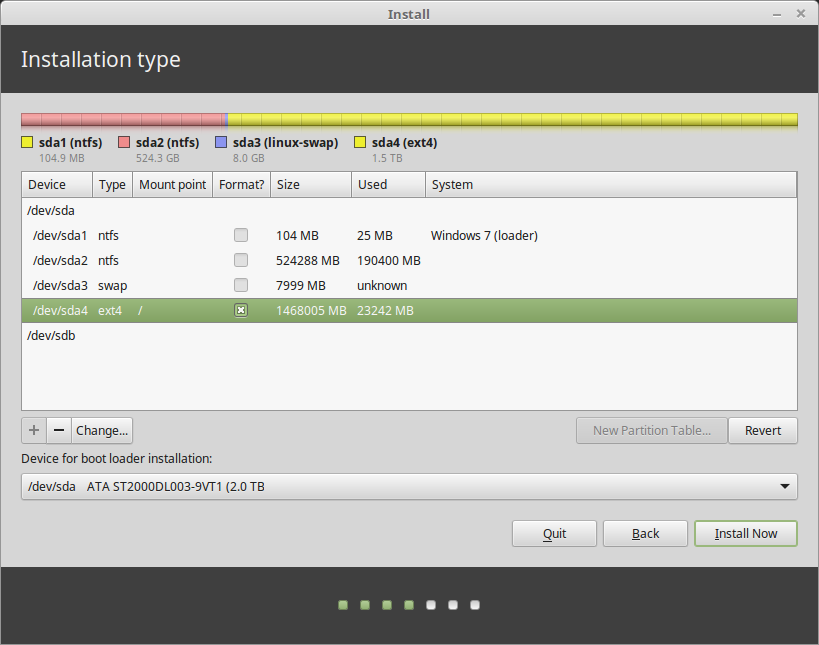Linux Mint precisa que una partición se monte en el directorio raíz /
El sistema operativo Linux Mint (sin software adicional ni información personal) ocupa alrededor de 15GB. Asigne a esta partición un tamaño apropiado (100GB o más).
Se recomienda ext4. Es el sistema de archivos Linux más popular.

Cree también una partición swap. Esta partición se utiliza para la hibernación y como buffer de seguridad en caso de que el equipo se quede sin memoria RAM. Asigne a esta partición un tamaño igual a la cantidad de memoria RAM del equipo.
Seleccione la zona horaria
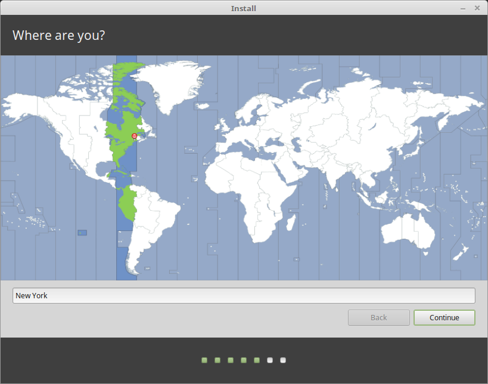Seleccione la distribución del teclado
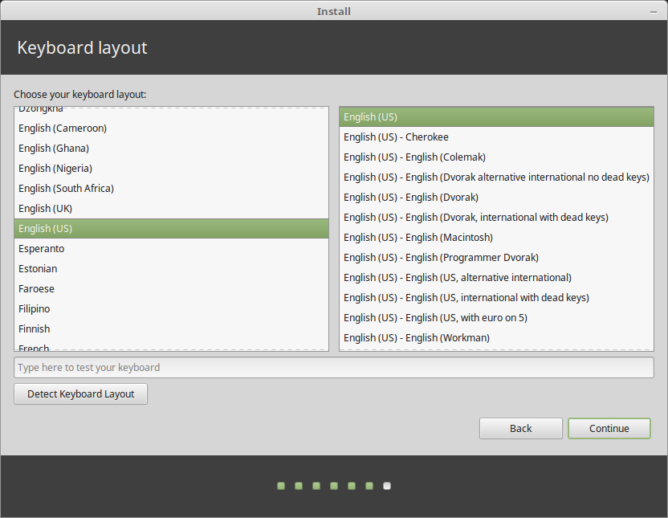Introduzca los detalles del usuario
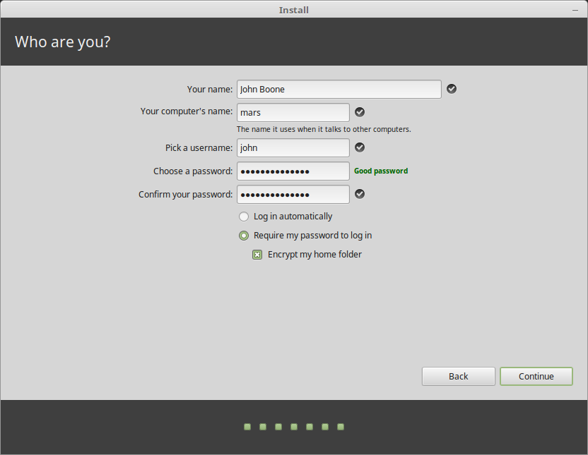Ingresa su nombre de usuario y una contraseña segura
Disfrute las diapositivas mientras Linux Mint se instala en su equipo.
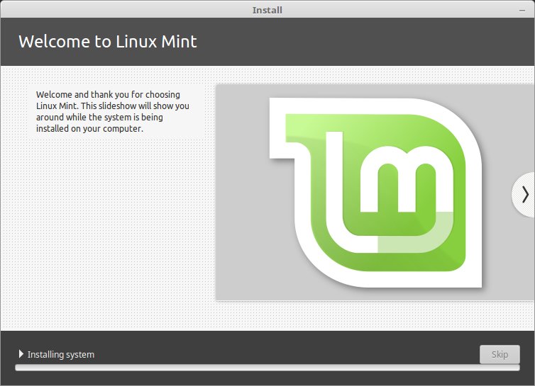Cuando termine la instalación, haga click en Reiniciar ahora.
Listo ahora tienes Linux Mint en tu compu 🤠